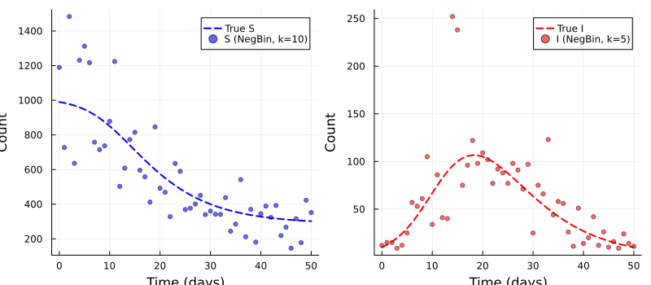
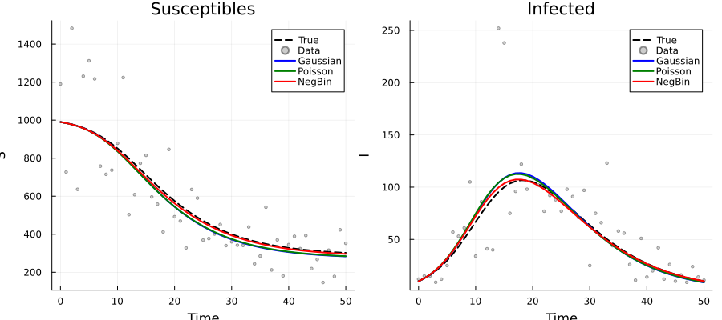
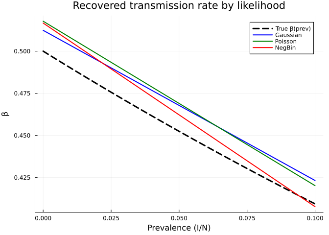
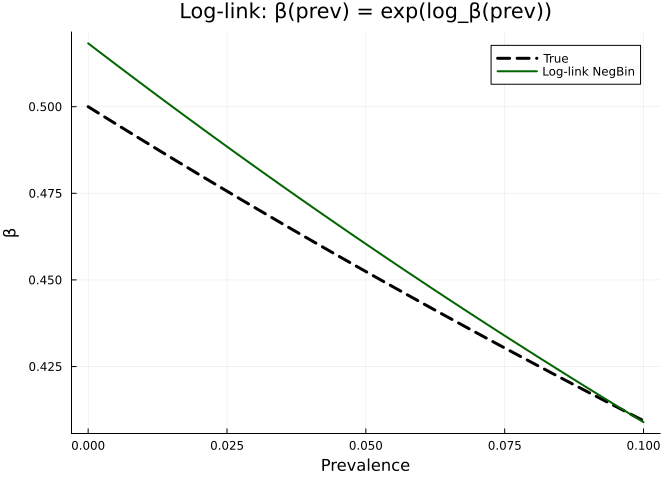
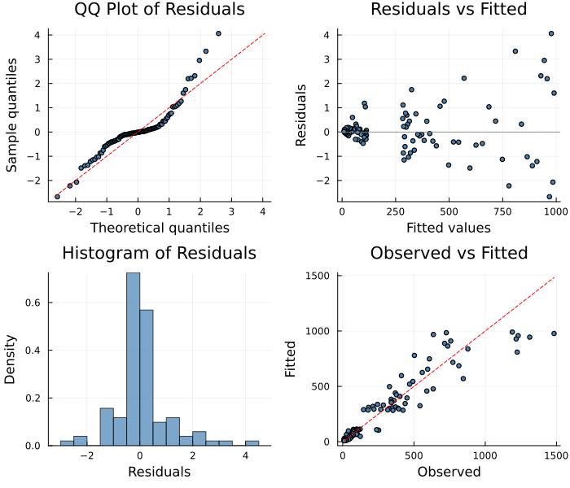

Epidemiological Count Data: Non-Gaussian Likelihoods
Overview
Epidemiological surveillance data are often discrete counts — case reports, hospitalisations, or deaths — not continuous measurements. Using a Gaussian likelihood on count data can lead to biased estimates, particularly when counts are small (where the variance is proportional to the mean).
PartiallySpecifiedModels.jl supports several likelihood families appropriate for count data:
| Likelihood | Use case | Variance structure |
|---|---|---|
Gaussian() | Continuous measurements | Constant (σ²) |
Poisson() | Count data, equidispersed | Var = Mean |
NegativeBinomial() | Count data, overdispersed | Var = Mean + Mean²/k |
This vignette demonstrates fitting an SIR model with a density-dependent transmission rate to count data, comparing the effect of different likelihood specifications.
Setup
using PartiallySpecifiedModels
using PartiallySpecifiedModels: solve
using OrdinaryDiffEq
using Plots
using Statistics
using Random
import Distributions
Random.seed!(42)TaskLocalRNG()Generating Realistic Epidemic Count Data
True model
We simulate an SIR epidemic where the transmission rate declines with prevalence — a behavioural feedback:
\[\beta(\text{prev}) = \beta_0 \, e^{-\alpha \cdot \text{prev}}\]
function sir_true!(du, u, p, t)
S, I = u; N = 1000.0
prev = I / N
β = 0.5 * exp(-2.0 * prev)
du[1] = -β * S * I / N
du[2] = β * S * I / N - 0.25 * I
end
u0 = [990.0, 10.0]
tspan = (0.0, 50.0)
sol_ode = OrdinaryDiffEq.solve(ODEProblem(sir_true!, u0, tspan), Tsit5(), saveat=1.0)
data_t = sol_ode.t51-element Vector{Float64}:
0.0
1.0
2.0
3.0
4.0
5.0
6.0
7.0
8.0
9.0
⋮
42.0
43.0
44.0
45.0
46.0
47.0
48.0
49.0
50.0Generate observations
Both S and I are observed as overdispersed counts (e.g. from serological surveys and case reports). We use Negative Binomial noise with dispersion parameter $k=10$ for S (less noisy, larger counts) and $k=5$ for I (noisier, smaller counts):
S_true = max.(sol_ode[1,:], 0.1)
I_true = max.(sol_ode[2,:], 0.1)
k_S = 10.0 # dispersion for S (less noisy)
k_I = 5.0 # dispersion for I (noisier)
S_counts = Float64.([rand(Distributions.NegativeBinomial(
k_S, k_S / (k_S + v))) for v in S_true])
I_counts = Float64.([rand(Distributions.NegativeBinomial(
k_I, k_I / (k_I + v))) for v in I_true])
data = hcat(S_counts, I_counts)
p1 = plot(sol_ode.t, sol_ode[1,:], label="True S", lw=2, ls=:dash, color=:blue)
scatter!(p1, data_t, S_counts, label="S (NegBin, k=10)", ms=3, alpha=0.6, color=:blue)
p2 = plot(sol_ode.t, sol_ode[2,:], label="True I", lw=2, ls=:dash, color=:red)
scatter!(p2, data_t, I_counts, label="I (NegBin, k=5)", ms=3, alpha=0.6, color=:red)
plot(p1, p2, layout=(1, 2), size=(800, 350),
xlabel="Time (days)", ylabel="Count")
Data characteristics
Susceptible (S):
Range: 146 – 1483
Mean: 555.6
Var/Mean: 188.7 (>1 = overdispersion)
Infected (I):
Range: 9 – 252
Mean: 60.4
Var/Mean: 43.8 (>1 = overdispersion)Define the PSM
The B-spline domain should closely match the observed prevalence range to avoid boundary artefacts. The epidemic starts at I/N = 0.01 and peaks around I/N ≈ 0.10, so we use (0.005, 0.11):
Prevalence range: 0.01 – 0.107Compare Likelihood Specifications
Each likelihood gets a fresh approximator:
Gaussian (standard, but wrong for counts)
Gaussian: data_loss = 1.5753497e6, edf = 2.0Poisson (correct variance structure for counts)
Poisson: data_loss = 1.5755929e6, edf = 2.0Negative Binomial (accounts for overdispersion)
NegBin: data_loss = 1.5873491e6, edf = 2.0Compare Results
Fitted trajectories
p_S = plot(sol_ode.t, sol_ode[1,:], label="True", lw=2, color=:black, ls=:dash,
xlabel="Time", ylabel="S", title="Susceptibles")
scatter!(p_S, data_t, S_counts, label="Data", ms=2, alpha=0.4, color=:gray)
plot!(p_S, data_t, sol_gauss.fitted_values[:, 1], label="Gaussian", lw=2, color=:blue)
plot!(p_S, data_t, sol_pois.fitted_values[:, 1], label="Poisson", lw=2, color=:green)
plot!(p_S, data_t, sol_nb.fitted_values[:, 1], label="NegBin", lw=2, color=:red)
p_I = plot(sol_ode.t, sol_ode[2,:], label="True", lw=2, color=:black, ls=:dash,
xlabel="Time", ylabel="I", title="Infected")
scatter!(p_I, data_t, I_counts, label="Data", ms=2, alpha=0.4, color=:gray)
plot!(p_I, data_t, sol_gauss.fitted_values[:, 2], label="Gaussian", lw=2, color=:blue)
plot!(p_I, data_t, sol_pois.fitted_values[:, 2], label="Poisson", lw=2, color=:green)
plot!(p_I, data_t, sol_nb.fitted_values[:, 2], label="NegBin", lw=2, color=:red)
plot(p_S, p_I, layout=(1, 2), size=(900, 400))
Recovered β(prevalence)
This is the key comparison — how well each likelihood recovers the true transmission rate:
prev_grid = range(0.0, 0.1, length=100)
β_true = [0.5 * exp(-2.0 * p) for p in prev_grid]
plot(prev_grid, β_true, label="True β(prev)", lw=3, color=:black, ls=:dash,
xlabel="Prevalence (I/N)", ylabel="β",
title="Recovered transmission rate by likelihood")
plot!(prev_grid, [sol_gauss.unknown_functions[:β](p) for p in prev_grid],
label="Gaussian", lw=2, color=:blue)
plot!(prev_grid, [sol_pois.unknown_functions[:β](p) for p in prev_grid],
label="Poisson", lw=2, color=:green)
plot!(prev_grid, [sol_nb.unknown_functions[:β](p) for p in prev_grid],
label="NegBin", lw=2, color=:red)
Summary
Likelihood | β(0.01) est | β(0.06) est | EDF | Cor(β̂, β_true)
----------------------------------------------------------------------
Gaussian | 0.503 (0.490) | 0.459 (0.443) | 2.0 | 1.0
Poisson | 0.508 (0.490) | 0.459 (0.443) | 2.0 | 1.0
NegBin | 0.506 (0.490) | 0.451 (0.443) | 2.0 | 1.0Using RodeoSolver with Count Data
The RodeoSolver can also be used with count-like data, treating the observations as Gaussian with an appropriate observation variance:
Rodeo β recovery:
β(0.01): true=0.49, Rodeo=0.503
β(0.03): true=0.471, Rodeo=0.486
β(0.06): true=0.443, Rodeo=0.459
β(0.09): true=0.418, Rodeo=0.432Practical Considerations
When to use each likelihood
| Data type | Recommended | Rationale |
|---|---|---|
| Continuous measurements (concentrations, biomass) | Gaussian() | Constant variance assumption reasonable |
| Count data with no overdispersion | Poisson() | Variance = mean; fails badly if data are overdispersed |
| Overdispersed counts (aggregated reports, surveillance) | NegativeBinomial() | Extra variance parameter handles clustering |
| Mixed or uncertain variance structure | NegativeBinomial() or Gaussian() | Both are robust; Poisson is fragile to misspecification |
Log-link for positive-constrained rates
When the unknown function represents a rate that must be positive (like $\beta$), consider modelling the log of the rate:
function sir_log!(du, u, p, t)
S, I = u; N = 1000.0; prev = I / N
# Model log(β) to ensure positivity
β_val = exp(p.log_β(prev))
foi = β_val * S * I / N
du[1] = -foi; du[2] = foi - 0.25 * I
end
approx_log_β = BSplineApproximator(:log_β, (0.005, 0.11), 8; initial=log(0.4))
prob_log = PSMProblem(sir_log!, u0, tspan, [approx_log_β];
data_times=data_t, data_values=data,
obs_to_state=[1, 2], known_params=(γ=0.25,),
likelihood=NegativeBinomial(), solver=Tsit5())
sol_log = solve(prob_log, LAML(maxiters=100))
β_log_est = [exp(sol_log.unknown_functions[:log_β](p)) for p in prev_grid]
plot(prev_grid, β_true, label="True", lw=3, color=:black, ls=:dash,
xlabel="Prevalence", ylabel="β",
title="Log-link: β(prev) = exp(log_β(prev))")
plot!(prev_grid, β_log_est, label="Log-link NegBin", lw=2, color=:darkgreen)
Diagnostic Plots
A standard 4-panel diagnostic display assesses residual behaviour for the primary Gaussian fit. The QQ plot checks normality of standardized residuals, “Residuals vs Fitted” detects systematic patterns, the histogram visualises the residual distribution, and “Observed vs Fitted” checks overall calibration.
using PartiallySpecifiedModels: appraise
diag = appraise(sol_gauss)
p_qq = scatter(diag.qq_theoretical, diag.qq_sample,
xlabel="Theoretical quantiles", ylabel="Sample quantiles",
title="QQ Plot of Residuals", ms=3, legend=false, color=:steelblue)
mn, mx = extrema(vcat(diag.qq_theoretical, diag.qq_sample))
plot!(p_qq, [mn, mx], [mn, mx], color=:red, ls=:dash, label="")
p_rf = scatter(diag.fitted, diag.residuals,
xlabel="Fitted values", ylabel="Residuals",
title="Residuals vs Fitted", ms=3, legend=false, color=:steelblue)
hline!(p_rf, [0], color=:gray, ls=:dot)
p_hist = histogram(diag.residuals, normalize=:pdf,
xlabel="Residuals", ylabel="Density",
title="Histogram of Residuals", legend=false, color=:steelblue, alpha=0.7)
p_of = scatter(diag.observed, diag.fitted,
xlabel="Observed", ylabel="Fitted",
title="Observed vs Fitted", ms=3, legend=false, color=:steelblue)
mn2, mx2 = extrema(vcat(diag.observed, diag.fitted))
plot!(p_of, [mn2, mx2], [mn2, mx2], color=:red, ls=:dash, label="")
plot(p_qq, p_rf, p_hist, p_of, layout=(2, 2), size=(700, 600))
Durbin-Watson: 2.521, 1.783Key Takeaways
- Set the B-spline domain to match the data range — extending beyond the observed prevalence causes severe boundary artefacts. Inspect the data to determine the actual range.
- NegativeBinomial handles overdispersion — crucial for real-world surveillance data. Poisson assumes $\text{Var}(Y) = \mu$, so it severely underestimates the true noise when data are overdispersed, leading to under-smoothed estimates (EDF ≈ number of knots).
- Gaussian is surprisingly robust for count data with moderate overdispersion, because it estimates a free variance parameter $\hat\sigma^2$ that absorbs the extra variability.
- The log-link ensures positive rates and can improve numerical stability.
- All solvers in
PartiallySpecifiedModels.jlwork with non-Gaussian likelihoods through LAML.